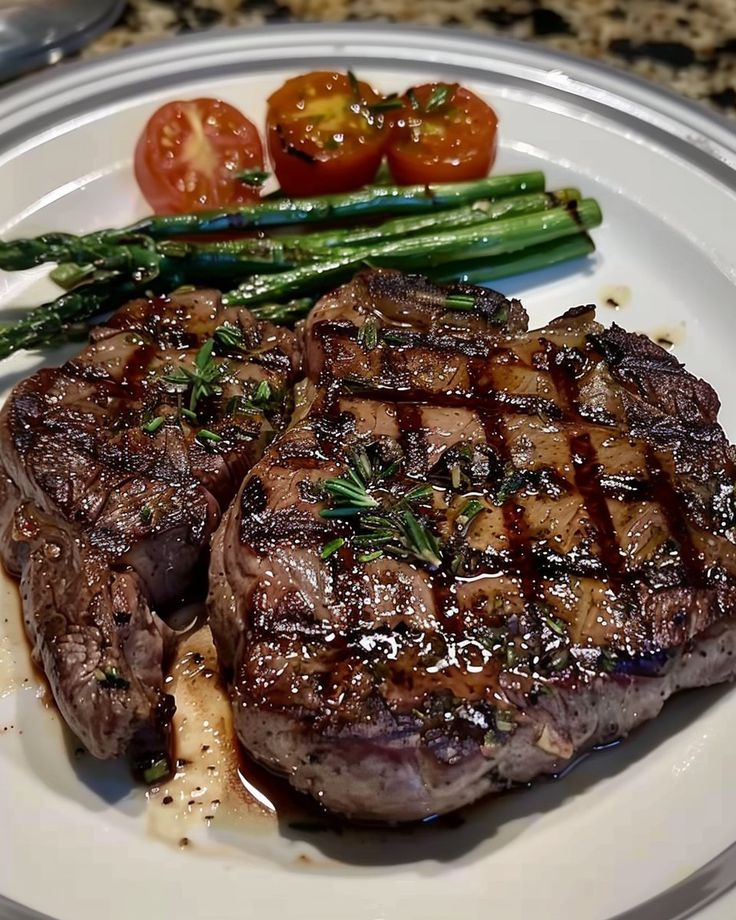

Steak is a flavorful and satisfying dish made from a cut of beef, typically grilled, pan-seared, or broiled to perfection. It can be cooked to various levels of doneness, from rare to well-done, and is often served with sides like vegetables, potatoes, or sauces. A perfectly cooked steak is tender, juicy, and packed with rich taste.
